- Играть онлайн
- Играть с компьютером
- Мои расстановки
- Сохранённые игры
- История игр
- Справка
- Выход из аккаунта
Веб-приложение "Игра "Морской бой"
Введение
Данная система предназначена для сражения с человеком или компьютером в игре «Морской бой». Для игры с
компьютером выбирается один из трех уровней сложности (легкий, средний, сложный), а для игры с человеком
необходимо выбрать в лобби своего противника либо создать игру самому. При этом для игры с компьютером
предусмотрена возможность сохранения игры и продолжения в другое время. Также есть возможность посмотреть
сохраненные расстановки и историю игр.
Основными функциями приложения являются:
- игра в морской бой с компьютером;
- сохранение и загрузка игры с компьютером;
- игра в морской бой онлайн;
- сохранение и загрузка расстановок;
- просмотр истории игр;
- выдача справочной информации.
Авторизация
После запуска системы откроется страница авторизации, предназначенное для входа в систему. Для авторизации необходимо ввести свои логин и пароль. В случае если данные корректны вы будете перенаправлены на страницу главного меню.
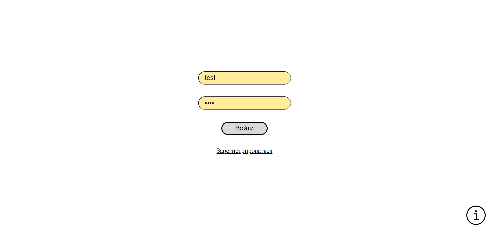
Если данные введены неверно, то система выдаст сообщение с соответствующей ошибкой.
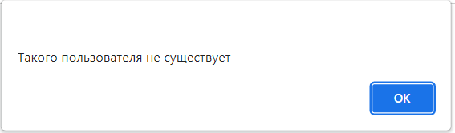
Регистрация
Если пользователь не зарегистрирован в системе, то он может зарегистрироваться как новый пользователь, нажав на кнопку «Зарегистрироваться», после чего откроется страница регистрации. Для регистрации нового пользователя необходимо ввести логин, пароль и подтверждение пароля. В случае если логин не занят, перед вами откроется страница авторизации, иначе появится сообщение с ошибкой о том, что данный логин недоступен.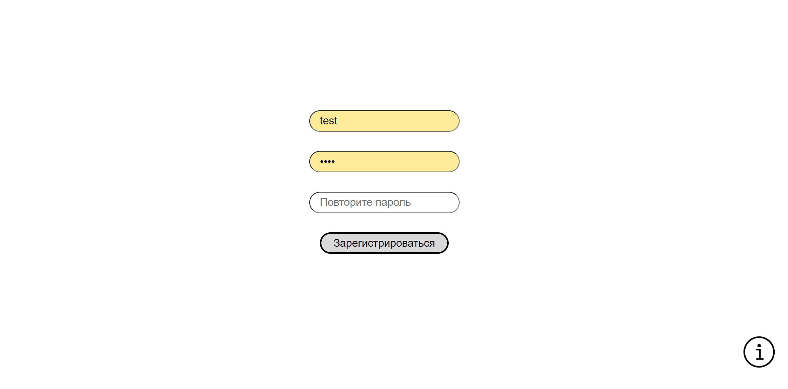
Главное меню
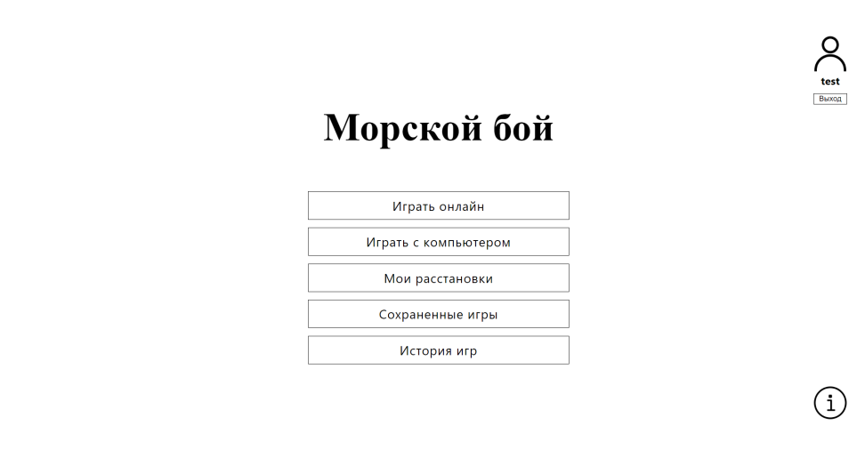
Играть онлайн
Подготовка к игре
Перед началом игры необходимо расставить все свои корабли на поле, для этого необходимо перетащить корабли на поле вручную, воспользоваться функцией автоматической расстановки или загрузить сохраненную расстановку. При расстановке кораблей вручную вы можете изменить ориентацию корабля нажав на клавишу “R” во время его перемещения.

В случае если вас не устраивает расположение корабля на поле вы можете удалить его нажатием клавиши “D” и расположить его заново. В системе реализованы 3 стратегии автоматической расстановки кораблей: случайная, половина поля, берега. Для автоматической расстановки кораблей по выбранной стратегии необходимо нажать на кнопку с соответствующим названием. Что бы загрузить сохраненную расстановку необходимо нажать на копку “Загрузить”. После этого будет выведено модальное окно со списком сохранённых расстановок, при нажатии по какой-либо из них, выбранная расстановка появится на вашем поле.
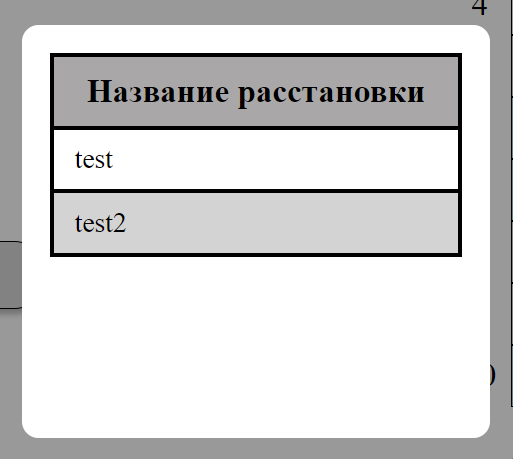
После нажатия кнопки в бой перед вами откроется страница лобби.
Лобби
Вы можете создать свою комнату или подключится к уже созданной. Для подключения к уже созданной игре, необходимо нажать на кнопку “Подключиться” напротив выбранной вами игры. Для обновления списка игроков, ожидающих противника, необходимо нажать кнопку “Обновить”.
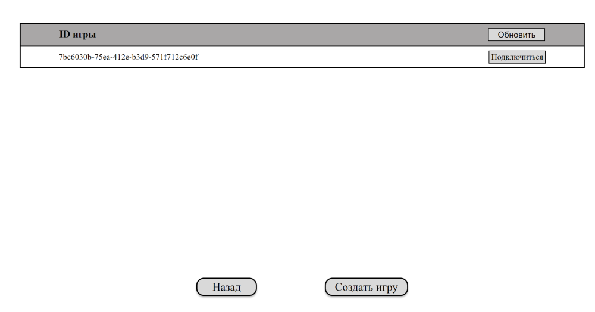
При нажатии кнопки” Создать игру” откроется страница с боем и запустится режим ожидания противника. Игра начинается после подключения противника.
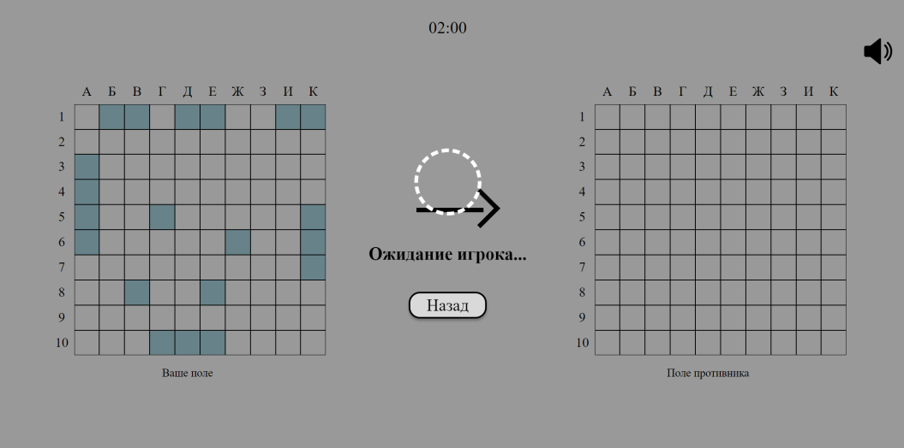
Бой
Процесс игры заключается в выборе клетки на поле противника. Система анализирует ход и отображает его результат, при попадании в корабль дается дополнительный ход. Чей сейчас ход показывает стрелка по середине экрана. Игра продолжается до тех пор, пока все корабли одного из игроков не будут уничтожены. Так же сверху экрана есть таймер, ограничивающий ход игроков, в случае если время закончится, а ход не будет сделан, не сходившему игроку будет присвоено поражение. При каждом выстреле воспроизводится его звук, для его отключения необходимо нажать на кнопку в правом верхнем углу экрана.
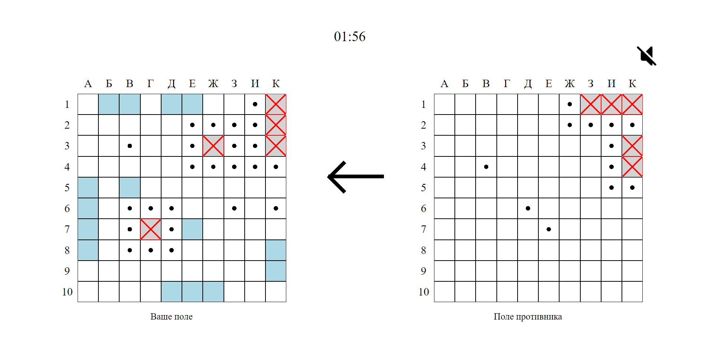
По окончанию игры перед вами появится сообщение с информацией о победе/поражении, после его закрытия вы будете переведены на экран главного меню.
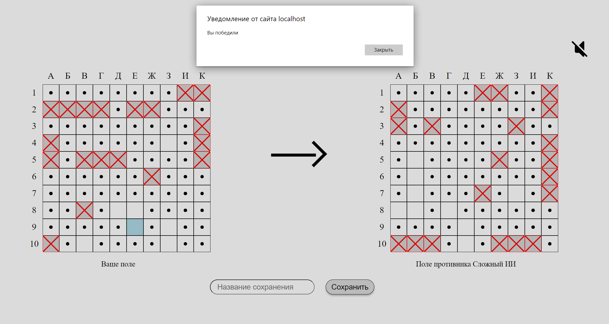
Играть с компьютером
Для игры с компьютером необходимо нажать в главном меню на кнопку “Играть с компьютером”, после этого вы будете перенаправлены на страницу для расстановки кораблей.Подготовка к игре
Функции аналогичны подготовке игры с игроком, но, после нажатия на кнопку “В бой”, перед вами появится выбор сложности противника. Сложность противника влияет на его стратегию стрельбы и расстановки. После выбора сложности перед вами откроется окно игры.
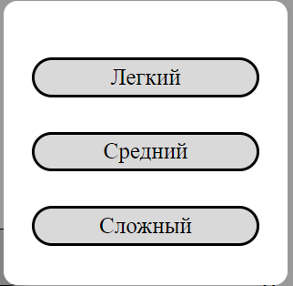
Бой
Функции аналогичны бою c игроком, но игру с компьютером можно сохранить на любом её этапе, для этого необходимо ввести её название в соответствующее поле и нажать кнопку “Сохранить”.
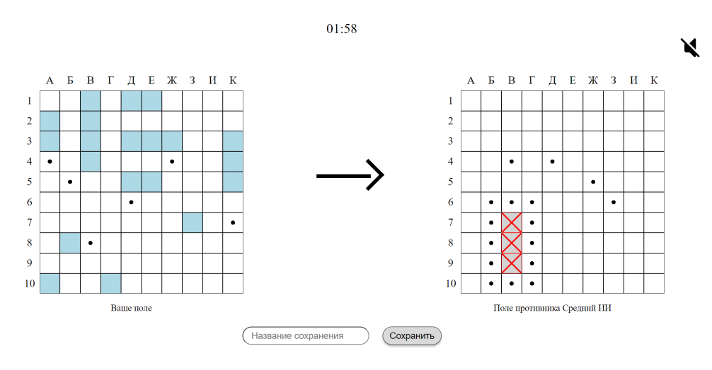
Мои расстановки
Для просмотра ваших сохраненных расстановок необходимо нажать кнопку “Мои расстановки” в главном меню. После этого откроется страница со списком ваших сохранённых расстановок и игровым полем. При нажатии по какой-либо из расстановок она будет отображена на поле справа. Для удаления расстановки необходимо нажать на крестик справа от её названия. Для возврата в главное меню необходимо нажать кнопку “Назад”.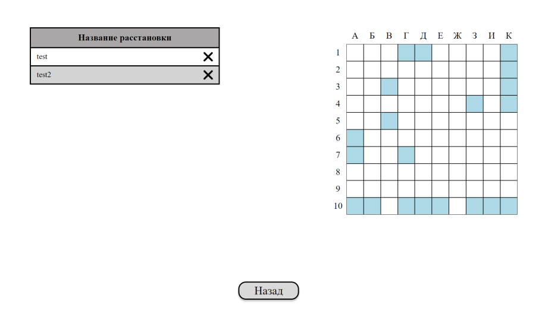
Сохранённые игры
Для загрузки игры, сохраненной ранее, необходимо нажать на кнопку “Сохраненные игры” в главном меню. После этого откроется страница со списком, содержащим названия сохраненных игр. Для продолжения игры необходимо нажать на кнопку “Загрузить”, после этого игра возобновится, учитывая предыдущие сделанные ходы. В случае если вы хотите удалить сохраненную игру, то вам необходимо нажать на крестик напротив названия ненужной игры. Для возврата в главное меню необходимо нажать кнопку “Назад”.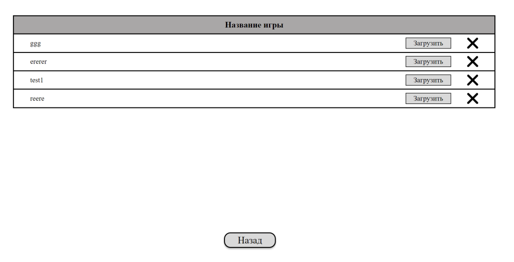
История игр
Для просмотра истории ваших игр, необходимо нажать на кнопку “История игр” в главном меню. После этого откроется страница с таблицей, в которой указано с кем вы играли и итог игры. В случае если вы победили запись выделяется зеленым цветом и красным в случае поражения. Для возврата в главное меню необходимо нажать кнопку “Назад”.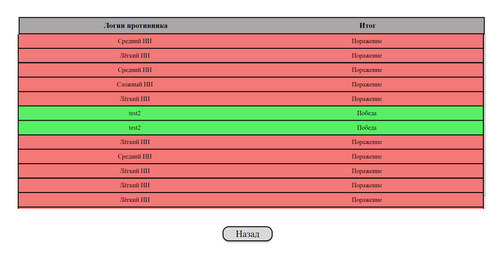
Справка
Для получения справочной информации, необходимо нажать на кнопку с иконкой вопросительного знака в главном меню. Появится модальное окно с тремя кнопками “Правила игры”, “О приложении” и “О разработчиках”. Для получения необходимой вам информации необходимо нажать на соответствующую кнопку.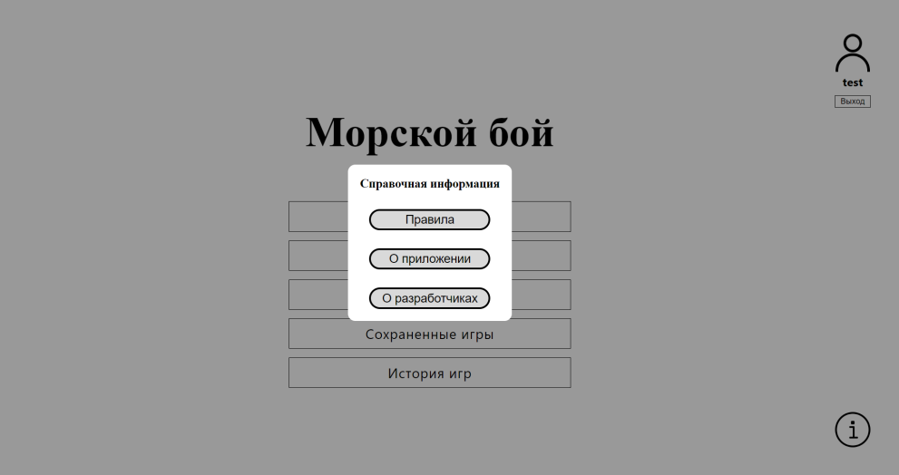
Выход из аккаунта
Для выхода из аккаунта вам необходимо нажать на кнопку выход в правой верхней части экрана главного меню. После этого вы будете перенаправлены на страницу авторизации.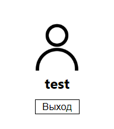